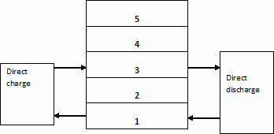
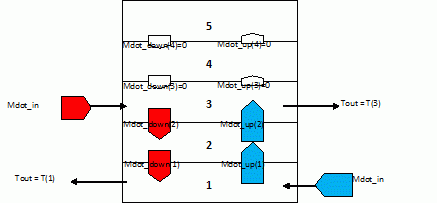
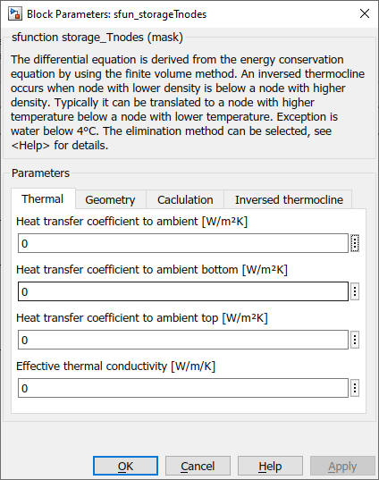
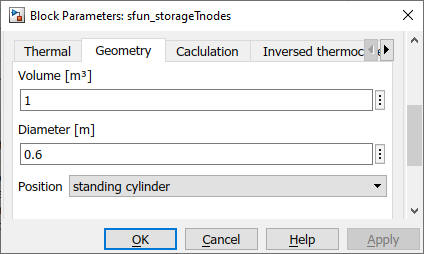
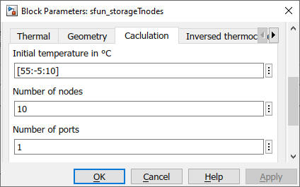
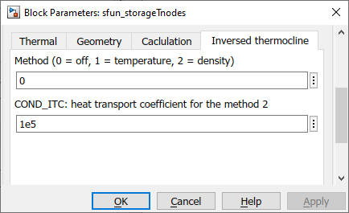
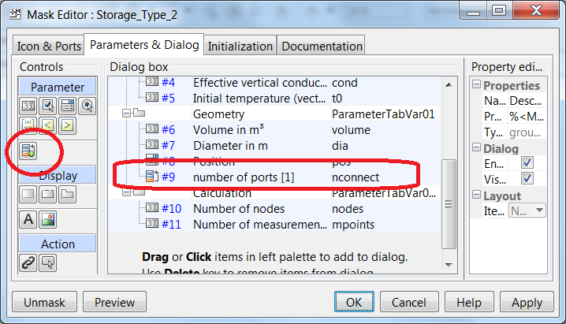

sfun_storage_Tnodes
Path: CARNOT/Basic/Thermal_Models
Purpose:
Basic model for the multiport storage model.
The concept is a multiport one-dimensional model. The storage is connected
to other CARNOT components by a variable number of port blocks.
Description:
S-Function storage_Tnodes
This s-function is the basic model of the storage. It divides the storage in N
nodes where node 1 is at the bottom and node N at the top.
The Port_to_Storage vector has the following elements :
| [T_in_1, T_in_2, … T_in_N] | Vector with N elements: temperatures of mass flows entering the nodes |
| [mdot_in_1, T_mdot_in_2, … mdot_in_N] | Vector with N elements: mass flows entering the nodes |
| [mdot_up_1, mdot_up_2, … mdot_up _(N-1)] | Vector with N-1 elements: mass flows upwards in the store due to the pipe connections |
| [mdot_down_1, mdot_down_2, … mdot_down_(N-1)] | Vector with N-1 elements: mass flows downwards in the store due to the pipe connections |
| [Qdot_1, Qdot_2, … Qdot_N] | Vector with N elements: power entering node (negative for cooling) due to heat exchangers |
| pressure | Pressure of fluid in Pa (relevant only for pipe connections, -9999 for heat exchangers) |
| Fluid type | Fluid type (relevant only for pipe connections, -9999 for heat exchangers). See Basic_Concepts - THB for details. |
| Fluid mixture | Fluid mixture (relevant only for pipe connections, -9999 for heat exchangers). See Basic_Concepts - THB for details. |
Mathematical Model
The storage is divided into "NODES" nodes. An energy balance for
every node is done using the following differential equation.
This equation is derived from the energy balance with the finite volume approach
[Patankar 1980]. For the massflow the upwards scheme is used (entering massflow
is evaluated with the temperature of the node above). For the thermal
conductivity central differences are used.
(rho*cp) * dT/dt =
+ (Uloss,wall*Awall + Uloss,top*Atop
+ Uloss,bot * Abot) / Vnode * (Tamb
- Tnode)
+ cond / dh2 * (Tnode_above - Tnode)
+ cond / dh2 * (Tnode_below - Tnode)
+ mdot_up * cp / Vnode * (Tnode_below
- Tnode)
+ mdot_down * cp / Vnode
* (Tnode_above - Tnode)
+ Uhx * Ahx / Vnode * (Thx_node - Tnode)
+ heat_transport
| symbol | used for | unit |
| Ahx | surface area of heat exchanger per node | m2 |
| Abot | surface for thermal losses of bottom node, must be set to zero for all nodes except bottom node | m2 |
| Atop | surface for losses of top node, must be set + to zero for all nodes except top node | m2 |
| Awall | wall surface or losses of one node | m2 |
| cond | effective axial thermal conductivity | W/m/K |
| cp | heat capacity | J/kg/K |
| dh | distance between two nodes | m |
| heat_transport | heat transport due to an inversed thermocline | W/m3 |
| mdot | mass flow rate ("up" or "down" is zero according to sum of flowrates) | kg/s |
| rho | density | kg/m3 |
| T | temperature | °C |
| t | time | s |
| Uloss,bot | heat loss coefficient of the cylinder bottom surface | W/m2/K |
| Uloss,top | heat loss coefficient of cylinder top surface | W/m2/K |
| Uloss,wall | heat loss coefficient of cylinder wall surface | W/m2/K |
| Uhx | heat transfer coefficient of heat exchanger | W/m2/K |
| Vnode | node volume | m3 |
The number of nodes is variable and can be set as a parameter of the
S-function from SIMULINK. For fast calculations a number of 10 nodes is
normaly sufficient. An accurate representation of the storage tank is
achieved with 50 to 100 nodes.
For this node-scheme you have to obey the following boundary condition
for the Courant number c when using fixed timestep solvers. Adapt the
timestep dt accordingly:
c = dt * v / dh <= 1
with the velocity v
v = mdot / rho / Ac_storage
For most exact results with variable timestep solvers the maximum time
step dt should be 300 seconds.
The effective axial thermal conductivity in W/m/K is calculated
by means of the equation:
cond = (l_wall*Ac_wall + l_fluid*Ac_storage +
l_heatex*Ac_heatex) /
(Awall + Astorage + Aheatex)
| symbol | used for | unit |
| Ac_wall | cross-section area of wall | m2 |
| Ac_storage | cross-section area of store | m2 |
| Ac_heatex | cross-section area of heat exchanger | m2 |
| l_wall | thermal conductivity of wall material | W/m/K |
| l_fluid | thermal conductivity of fluid in storage | W/m/K |
| l_heatex | thermal conductivity of heat exchanger material | W/m/K |
Pipe connections and internal massflow

Pipes are connected to the nodes of the model. They are defined by the inlet and
outlet position. In the exampel above the direct charging pipe and the direct
discharing pipe are connected to node 1 and 3.
In the massflow balance in the storage model flows upwards and downwards are
seperated. The index n of the massflows upwards and downwards refer to volume
segment n below.

The s-function storage_Tnodes.c checks for all nodes except the top one if there
is a massflow downwards entering from the node above. Additionally for all nodes
execept the bottom node (index 1) the s-function checks if there is a massflow
upwards from the node below..
Entering massflows, the massflows upwards and downwards are defined by the pipe
connections. The s-function sums up all massflow downwards and upwards to
determine the resulting massflow (upwards or downwards)..
Inversed Thermocline
From the differential equation it may occur that some lower nodes have a higher
temperature than the upper nodes. This is a typical situation when heating the
storage with an immersed heat exchanger at the lower part. To avoid this
unrealistic situation, an algorithm for the elimination of the inversed
thermocline is included in the model. The elimination method can be selected:
| 0 | : | inversed thermocline is not eliminated |
| 1 | : | temperature based |
| 2 | : | Density based |
WARNING: MODE 1 IS NOT SUPPORTED BY CURRENT MATLAB VERSIONS !!!
Temperature based: An inversed thermocline exists if the temperature of
the lower node is more than LIMIT_T_INVERSED (1e-4 °C) above the upper node.
The model adds an additional heat transport towards the upper node.
heat_transport = COND_ITC * temperature_difference / Vnode
A typical range for COND_ITC is 5e3...5e4 [W/K].
Density based : An inversed thermocline exists, if the density of the
lower node is less than the density of the upper node. The model adds
an additional heat transport towards the upper node.
heat transport = COND_ITC * density_difference / Vnode
A typical range for COND_ITC is 1e4...1e5 [W*m³/kg].
Measurement Points
As we want to know the temperature at fixed places inside the storage, a number
of measurement points are placed at equidistant locations inside the storage,
no matter how many nodes are used for the calculation. The first temperature in
the output vector "Tnode" corresponds to the lowest measurement
point, rising numbers in upwards.
Input:
| Tamb | : | Ambient temperature in °C |
| Port 1 | : | Port_to_Storage Vector 1 |
| Port 2 | : | Port_to_Storage Vector 2 |
| ... | : | ... |
| Port N | : | Port_to_Storage Vector N |
Output:
| Energy | : | Energy balance of the storage: 1 - internal change of energy in J 2 - thermal losses in J |
| Tnodes | : | Vector with the node temperatures (first temperature is bottom node, last temperature is the top node). This temperature vector is given back to the port block where the original THB is reassembled with the new values for the temperature. |
Parameters and Dialog Box:
The parameters represent the geometric and thermodynamic data of the storage. The top mask defines also the number of ports, the number of temperature sensors and the number of nodes.




Using the block in your store model
If the block sfun_storage_Tnodes is located inside another block and this block
changes the number of ports by an own mask parameter, the original callback
does not become executed immediately. This is a Simulink safety measure to
prevent infinite loops. However, this may lead to a strange behaviour of the
block sfun_storage_Tnodes during starting (initialisation) of a simulation model.
To prevent this, Simulink must be told that the mask parameter of the block
containing sfun_storage_Tnodes and the block sfun_storage_Tnodes are actually
the same. This is called " promotion " in Simulink. To promote a mask
parameter right click on you block, select mask and edit mask. This dialog box
appears.

Now select " Promote underlying block Parameter(s)to this mask parameter " as indicated in the figure by the red circle. As the next step select the " number of ports " parameter of sfun_storage_Tnodes and click " Ok ".
If you now open the mask of sfun_storage_Tnodes, the parameter " number of ports " will be shown grayed. This indicates that the parameter is promoted to the mask above.

Examples:
Open the example explorer from the Matlab command window
ExampleBrowser
or load the examples via the CARNOT library.
Verification
Literature:
Patankar: Numerical Heat Tansfer and Fluid Flow, 1980
NOTE:
You may use this storage with MAX_PORT ports of any type (pipes, heat
exchangers). The inlet and outlet of the ports may be at the same height or at
different heights.. The maximum
number of ports (MAX_PORT) is defined in the s-function storage_Tnodes.c..
The maximum number of
ports MAX_PORT is limited to 10 in the acual version of CARNOT. You may change
the number by editing the c-code and compiling the file. See "Advanced
Topics: Creating S-Functions as c-mex Files".
Characteristics:
| Direct Feedthrough | : | No |
| Sample Time | : | Inherited from driving block |
| Vectorized | : | No |